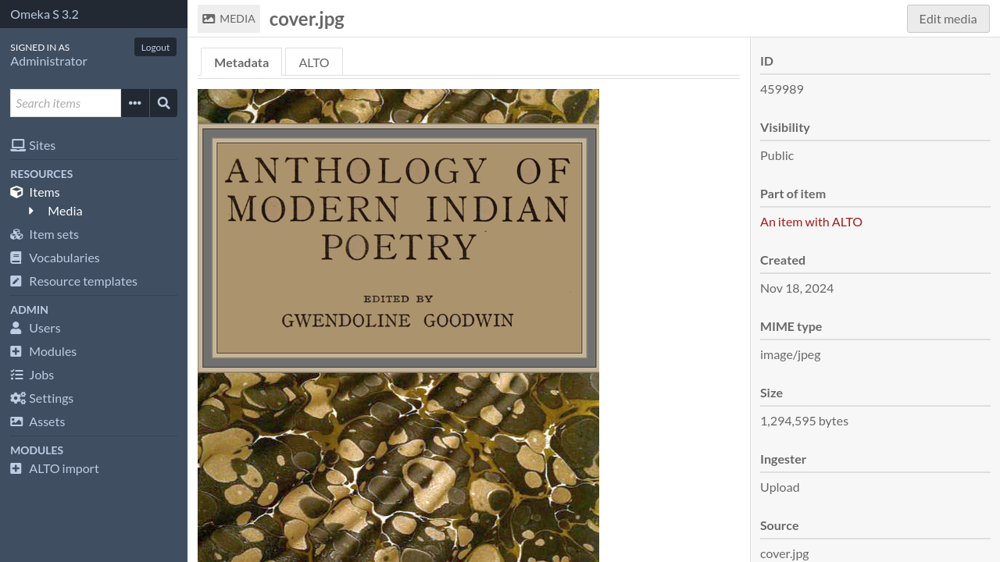
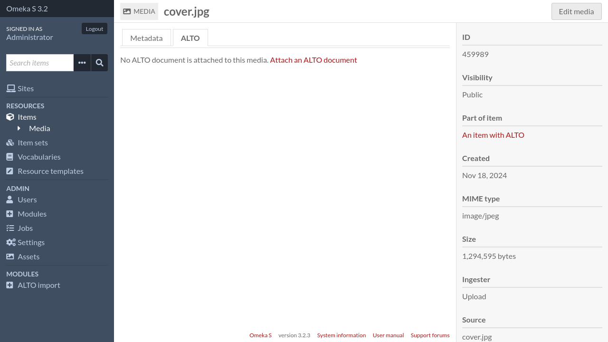
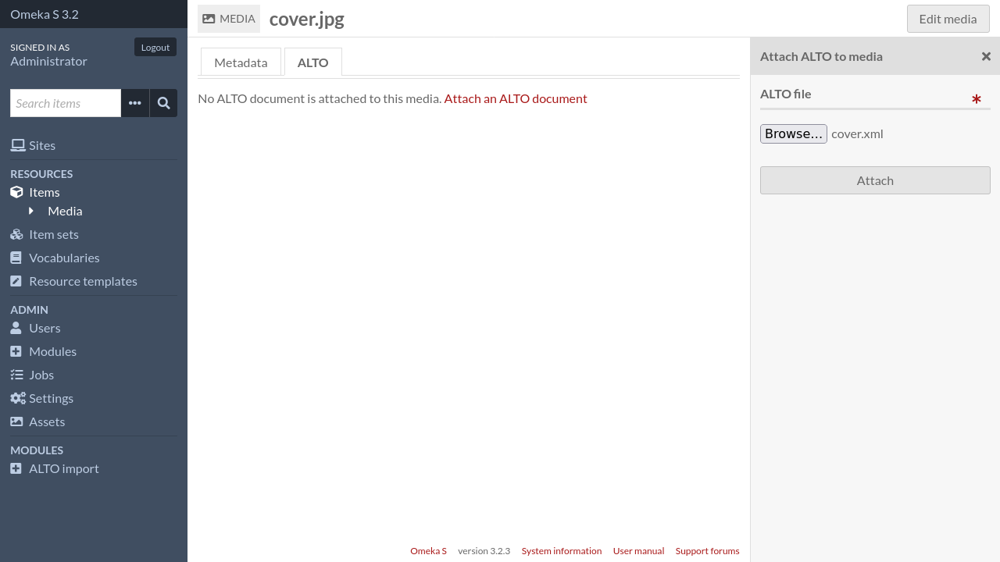
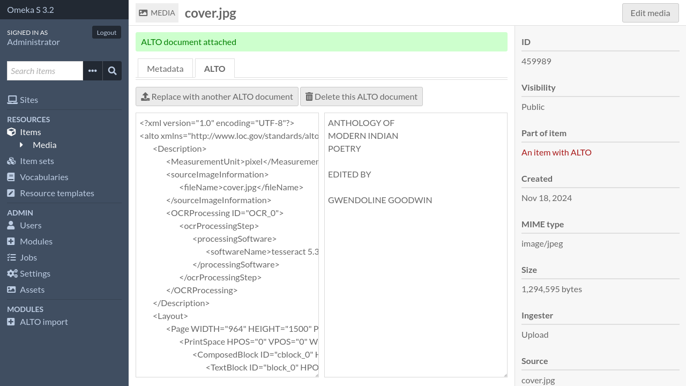

Attach ALTO to a media
Manual import
To attach an ALTO document to a media, go the media page in the admin interface.
Click on the “ALTO” tab.
Click on “Attach an ALTO document”. A sidebar will open.
Select your ALTO file and submit the form.

Note
Unlike batch import, no control is made on filename.
Batch import
To import multiple ALTO files at once, click on “ALTO import” in the admin navigation menu.

From there, you have to select all the ALTO files that you want to import.
Important
ALTO files will be attached to media whose filename (or “source”) match the ALTO filename.
For instance, an ALTO file named PAGE0001.xml will be attached to the
media whose filename matches PAGE0001.{extension} (eg. PAGE0001.png).
For files with multiple extensions (eg. PAGE.0001.alto.xml),
extensions are removed one by one until a match is found (eg.
PAGE.0001.alto then PAGE.0001 then PAGE).
If no media or several media match, the ALTO file is not imported.
Options
- Replace existing ALTO documents
If checked, matching media which already have an ALTO document attached will have their ALTO document replaced